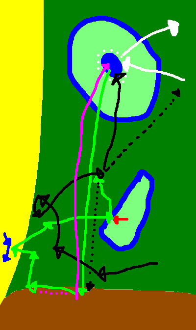

Storyline of Castaway Wars

Summary
A mayor number of people stranded on the island. After attempts to build a stable community failed due to serious differences of ideas for island and community policies, the group split up into several fractions, which are mostly hostile towards each other.
Timeline
YC means Years in the Castaway's timeline. 0-1-1 YC was the day when the first people arrived on the island. BYC is before this. Since none of the first castaways knew how much time had passed, they built their own calendar. This was then adopted by all castaways who arrived later, because most of them didn't know the exact date either.
early phase: 0YC until 20 YC
- 0-0-some days BYC: beginning of the stormy phase
- 0-0-one or two days BYC: 4:00 am: A ship sinks in the storm near the island.
- 0-0-one or two days BYC: afternoon: people from that ship make it to beacon beach and immediately fall asleep, terribly exhausted.
- 0-1-1 YC: 7:30 am: first person wakes up. No idea how much time has passed. Person starts waking up the others.
- 0-1-1 YC: 9:40 am: everyone present woken up. Mostly healthy. Attempts to gather status informations.
- 0-1-1 YC: 10:13 am: Status information gathered:
- no advanced equipment, only steel knives
- drinkable water available
- fruit, rabbits and birds available for food
- no sign of dangerous animals
- no sign of any kind of human presence
- no short or mid-term ways of escaping this place (probably an island)
- 0-1-2 YC: set up of first signal fire
- 0-1-3 YC: start hunting wild pigs in the near part of the vast forest
- 0-1-6 YC: start of political disagreements: just wait to be saved, build homes, or live nomadic and have fun
- 0-1-10 YC: nomad lovers split away, however, not many women join them
- 0-1-11 YC: nomads split up into two fractions due to cultural disagreements, party with higher culture refered to as wood runners, party with lower culture called barbarians. Almost all nomad women join the wood runners
- 0-1-12 YC: barbarians split up into two tribes due to leadership disagreements
- 0-1-14 YC: home lovers split away into the forest, become beach-side-huttese
- 0-1-16 YC: a barbarian tribe attacks beacon beach in order to capture women. The barbarians are from now on considered and called savages
- 0-1-17 YC: beacon guards' scouts start searching a safer place for the children
- 0-2-13 YC: beacon guards' scouts find Grand castle
- 0-2-16 YC: beacon guards children and their parents move to Grand castle. However, most adult beacon guards, which are not parents, stay at beacon beach, because still a considerable number of people strand there every week and the beacon guards don't want those people to be recruited by savages.
- 0-3-9 YC: end of stormy phase. Although fewer people now strand at beacon beach, the beacon guards still remain there hoping that signal fires could be more easily seen if they were at varios places on the island, not only at grand castle.
- 0-4-4 YC: unsatisfied by the current living standards of huttese, some of them split away to settle elsewhere. They build a fort on a hill and become known as fortese.
- 0-12-25 YC: beginning of a new stormy phase
- 1-1-12 YC: since a large number of castaways stranded at beacon beach during the last few days, beacon guards send couriers to grand castle in order to call for troops to escort the newly arrived families to security in grand castle.
- 1-3-7 YC: end of new stormy phase. Stormy phases now thought to occur regularly every year. This is actually true and due to the season.
- 3-3-12 YC: Venice castle claimed by castellans
- 4-11-13 YC: castellan scouts find first cliff-side-huttese village, they are accepted there, because they help defending the castellan woods from savages
- 7-6-12 YC: Rock castle claimed by castellans
- 18-1-1 YC: Council of castellans decides that every castle specializes in at least one special topic: Rock castle: martial arts and guns, Venice castle: ships, Grand castle: animal taming and various advanced technologies
middle phase: 20YC until 400 YC
- 44-7-12 YC: castellans successfully recruit martial arts grandmaster. He suggests attempts to produce metal.
- 44-11-24 YC: first small amount of metal extracted from ore, but quality is far too poor and quantity not mentionable.
- 53-6-17 YC: "the savage strike force" attacks a castellan strike force. See "important events" section.
- 66-6-6 YC: castellans build a small outpost as island settlement
- 72-2-8 YC: a newly stranded castaway mentiones that many ships have been lost on the routes that presumably pass the region within the last one hundred years, and that she isn't surprised to see a civilisation has evolved from the castaways that is waiting to be saved
- 86-3-4 YC: first group of latecomers arrives
- 100-1-1 YC: "First Century Jubilee" is celebrated. See "important events" section.
- 103-4-14 YC: Huttese attack the small castellan outpost on the island and claim it for themselves, claiming that the castellans didn't fully use this place. The huttese island settlement becomes stronger, to a point where some fortese think that it has become a fort. Therefore, the forteses too start to claim that the island settlement rightfully belongs to them. Latecomers who think it to be a nice spot won't make the whole situation better over the years.
- 124-5-6 YC: In the "blue mountain takedown", the fortification one of the highest hills on the island is destroyed. This marks the only time that a fortification on that specific hill is destroyed. See "important events" section.
- 145-7-3 YC: A newly stranded castaway stubbornly refuses to accept the castaway timeline. He insists that there must be someone somewhere who knew and noted the date of their arrival, and he wants the island to use the timeline of the outer world. But because he too lost the memory of the date, there is nothing he can do about it, and in the end, he too has to accept the castaway timeline.
- 188-6-1 YC: Start of the "huttese civil war", ends 200-1-1. See "important events" section.
- 207-10-1 YC: Start of the "philosophy rebellion", which ends in the Battle of the Burned Hills. See "important events" section.
- 208-5-6 YC: "Battle of the Burned Hills" starts, ends two days later. See "important events" section.
- 208-12-21 YC: rampage of the madmen ends with them getting physically ill when the rain and storm season starts
late phase: 400 YC and onwards
- 400-1-1 YC: Fourth Century Jubilee is celebrated. See "important events" section.
- 447-2-19 YC: castellans successfully recruit a real shipbuilder. Although she has no experience building ships with the suboptimal woods available, the ship-development of Venice castle significantly improves.
- 450-3-6 YC: on the last day of the stormy phase in this year, an unusually large group of latecomers strands. They report that they were refugees from a world wide war. They consider the locals to be barbarians due to the seemingly stoneage-leveled technology, and decide to conquer all and bring peace. They are the last group of latecomers that strands, and they will be known as the imperials. Afterwards, the number of new castaways drops significantly.
- 452-1-14 YC: the last reported new castaway strands. Picked up by the beacon guards, he or she reports that the world is at war, and that the culture level of the beacon guards looks better than what is usually seen in the "civilised" world.
- 499-6-4 YC: the "compass expedition" starts in Venice castle. See "important events" section.
- 500-1-1 YC: At the Fifth Century Jubilee, the castellans inform everyone of the distant islands. Thereafter, the "distant islands mode" starts.
- 512-8-6 YC: settlers in the distant islands first encounter the "seals" (a blue savage tribe which made it out to the distant islands)
- 597-6-1 YC: east end expeditions start. See "important events" section.
- 598-6-6 YC: someone of the east end expeditions reports to have seen an object in the water that can't have originated from the known castaways
- 599-8-6 YC: east end expeditions arrive at fire beach (twin island). Contact with twin island peoples established.
- 600-1-1 YC: Sixth Century Jubilee is celebrated, now with many people attending from boats. Everyone came, even those who moved to the distant islands, even the seals. Information spread that there is another equally huge island ten days away that might be interesting to trade with (twin island appearently put their research focus for the new distant islands resources on different topics than the main island).
- 600-4-16 YC: difference in religion marked between the main island and the twin island
- 600-4-18 YC to 600-10-12 YC: religion conflict escalates due to imperials spreading rumours, mutual decision is made to declare war
- 600-12-26 YC: scheduled with the beginning of the stormy season as a sign, the twin islands war starts.
later: twin islands war, the main island wins due to being used to fight high-tech wars because of the imperials- 1000-xx-xx YC: returners' fate. Todo! They will be back just right for the First Millennium Jubilee.
- later than that: A New Land event in which the castaways start returning to the mainland, because both Islands and the distant islands are getting overpopulated. This marks the end of the "Castaway Wars" Storyline.
important events
Some events require a longer description than what would be possible in the timeline. These events are explained here in detail. The events include:
- the savage strike force
- First Century Jubilee
- blue mountain takedown
- huttese civil war
- philosophy rebellion
- Battle of the Burned Hills
- Fourth Century Jubilee
- compass expedition
- east end expeditons
the savage strike force, 53-06-17 YC
"The savage strike force" was a short-term alliance of three savage tribes to attack a group of castellans. Despite the savages not working together very well (still some internal fighting), they were the largest group of cooperating savages ever reported.
the prologue
Nine years ago, the castellans recruited the martial arts grandmaster. Now, a relatively large strikeforce, with every member having ample martial arts training, quits Rock castle with the mission to recover knives and guns from the savages. They are a little over-confident in their skills and therefore act a little overaggressively. They think they can already work towards the known long-time-goal of Rock castle: wiping out all savages on the island. Therefore, the castellan strike force causes considerable damage to various savage tribes. The savages, of course, are not amused by this, and a large grey tribe (that may have been the union of two or even three grey tribes anyway) decides to try and rally as many unharmed nearby tribes as possible. They get the support of two other tribes (whose colour is still unconfirmed and disputed) and together, the three tribes become a what will be known as "the savage strike force", a strike force with the specified goal to defeat this specific castellan strike force.
the event
The savages attack the castellans sometime during the morning or early afternoon. (The historians couldn't find a consensus on when exactly the battle started, nor could they definitely figure out where the battle took place. Some claim it must have been in the forest, because the survivors remembered frantic fighting between trees, others argue that it must have been on savage beach or a hillside because such a large savage force couldn't have been coordinated between the trees, and the fight memories with trees originated from some fights while retreating.) The castellans don't immediately realise how large the attacking force really is, and decide to fight back. Despite the savages theoretically working together, there is a lot of distrust between the members of the tribes, and, as a result, they sometimes fight each other and not the castellans, but still most fight the castellans. When castellan castualties start to rise, and still more and more savages pour into the fight, the castellans suddenly realise that they can probably not win this battle. They decide to retreat. The savages immediately start to pursue the retreating castellans, and do not cease this pursue until the castellans retreat into Rock castle. However, with the start of the pursuit, the trust between the tribes ceases definitely, and the two smaller tribes leave the alliance and the grey tribe continues alone.
the aftermath
The castellan strike force lost 3/4 of their members, including the commander. The savages too, had high losses, since the castellans DID have a large and powerful strike force. Everyone on the island was surprised that the savages could form a large group like this. The savages could have declared the whole operation to have been a success, but regarding the high losses and the lack of trust inside the alliance, the grey tribe decided to not proclaim a great victory. On the castellan side, nobody wanted to declare a victory, although the lieutnant refused to call it a defeat, pointing out that the castellan strike force performed a rather good retreat despite the loss of the commander, once they decided to retreat, also the survivors brought back one loaded gun, plus the savage losses had been a lot higher. Nevertheless, it felt like a defeat to the castellans, and castellan strike forces have become a lot more cautious, and will never again try to fight back when directly attacked by a savage army.
First Century Jubilee, 100-1-1 YC
The "First Century Jubilee" was a giant celebration of the jubilee of exactly one hundret years since the first castaways' arrival. The entire island population was assembled and held peace for a few days, a highly remarkable achievement.
the prologue
In early 99 YC, many people wondered when the the onehunderedth anniversary of the first castaways' arrival would be, and if there would be some kind of celebration. The castellans decided to take the initiative and went to the all-purple-tribe to discuss their plan: Everyone should make peace for a few days around the date 100-1-1, and meet at beacon beach. Everyone should also bring enough food to feed themselves for that time. The all-purple-tribe liked the idea, and took on the responsibility to spread the news across the island. The time of more than six months ensured that the news could be spread to everyone on the island without exception. There was a debate if it would be safe to have so many savages at one point at the same time, but considering there was no black tribe at that time, it was thought that under the careful watch of the all-purple-tribe, it would be safe enough to have the meeting, especially with the host being the beacon guards, well revered as people who hate fighting. The main festivity was set on the first of the year 100, but the invitation was set calling everyone in as soon as the storm season starts. Although a little early, it was deciden to choose this signal for convenience reason, since noone on the island, even those without calendar, could miss this signal. Plus everyone would still need some time to move to beacon beach. The date within the storm season of course ment that the weather would not be ideal for celebrations, but on the other hand, short after the temperature drop people tended to be more calm and less fighting, so this would improve the safety of the whole organisation.
the event
Two days before the new year, actually everyone on the island was present at beacon beach. The castellans had a special guest: An old woman, 106 years old, the last surviving member of the very first group of castaways. She mentioned that when she first woke up, beacon beach looked lonely, with only few people scattered lying around or trying to wake the sleeping within vision range. Now, 100 years later, the beach looked slightly crowded no matter where one looked. It be of note that most people, even most savages, came unarmed (they had hidden their weapons at home) to the festival. On the morning of 100-1-1, at 7:30 am (exactly 100 years after the beginning of the known time), the celebration starts with a speech by the old castellan woman. She tells everyone about what she remembers of the first hours and days on the island, about the many years since, and most importantly, the will to achieve the goals of surviving or living on the island she experienced from the grown-ups when she was young. Everyone listens carefully, and her speech is written down by some of the beacon guards and castellans, and later turned into a song (for easier remembering) by the beacon guards, that will be spread to all fractions. After the speech, the festivity really begins, with music, dance, games and a lot of food that everyone shares. It officially ends with sunrise the next morning, and everyone begins to leave in peace again.
the aftermath
What is left to say? Well... The old castellan woman died short afterwards of old age, and her six-year-old great-granddaughter promised to herselve that she would see the 200-Years-jubilee celebration, if something like this would exist. Indeed, from now on, every onehundred years, there will be a Jubilee where everyone on the island assembles in peace, and every jubilee, there will be a 106-year old castellan woman of this dynasty to tell everyone about the event that lies exactly one hundred years in the past, and everyone will listen carefully, and the speech will not be forgotten. In this war-torn little world, there may not be olympic games to make peace for a short time, but these jubilees will always be celebrated in peace as long as there are people on the island.
blue mountain takedown, 124-5-6 YC
The "blue mountain takedown" marked the only time the fortification on the blue mountain was destroyed. It also serves as a reminder to how dangerous life on the island can be if you get unlucky and a cunning enemy uses that.
green: movements of the fortese
black: movements of the black tribe
purple: wood runners
white: white tribe
thick blue: hills
To understand which arrow happened when, it's necessary to consult the event.
the prologue
The most beautiful kind of blue flower found on the island grows only on the hills near savage beach, for some reason. The reason for this is unknown, since the only ones that have scientists that could possibly learn why are too far away to investigate. Anyway, around savage beach there are a few hills largely covered in these flowers, and thus they look blue. Because of this look, some of these hills are officially named something with blue, like blue nose hill (a very unsymmetric hill resembling a nose), blue cup hill (a hill with a little pond on the top), or blue mountain (one of the largest hills in the savage hills, even though definitely still a hill and nothing like The Volcano). Now blue mountain was at the time under firm fortese control, despite regular attempts by savages to take it, because obviously a large hill like this one is very prestigeous (did the savages call it "fear-spreading" or "respect-spreading"?) for the savages. This control was only broken when the fortese became victims of a number of bad coincidences combined with the cunning of a black savage tribe.
the event
On 124-5-6 YC, the fortese of blue mountain send the majority of their forces to cut wood in the savage woods. On their way south, they dodge some savage tribes without incident. When they arrive at the forest edge and start cutting wood, they flush out a brown savage tribe and get attacked in a very bad moment. Several fortese are killed, several more captured and enslaved by the savages, but most members of the woodcutgroup flee to the west. They choose the west because they see an approaching black tribe to the north-east. Unluckily, the battle with the brown tribe disturbed the birds, which is noticed by a local wood runner clan. They decide to use the situation and attack the flank of the fleeing fortese while the latter move along the forest edge. At this point, panic starts spreading amongst the fortese forces. They head straigthly north. There, the black tribe from before rushes at them and, the fortese knowing the tale of the savage strike force, scares them further to the west, into savage beach. This encounter goes without actual fighting. However, a blue tribe on savage beach is not amused by this sudden movement of hostile forces, and attacks the fortese. During the fight, the black tribe hurries some distance to the north-west, and waits there. When the battle between the blue tribe and the fortese ends with both forces fleeing the battlefield, the fortese retreat to the north. Again, the black tribe rushes at them, forcing them more to the east this time, somewhere onto the savage-controlled blue nose hill. Predictably, the red tribe there thinks of this as an attempt to take over their hill, and therefore, they attack the fortese, while the black tribe again just sits by and watches. When the fortese flee northwards again, the black tribe intecepts the now strongly weakened group and kills or captures everyone that remains, and loots their equipment. At least what they can use of it. Then, the black tribe chief makes another ingenious move: he sends a delegation to a nearby white tribe, informing them that they just destroyed a woodcutgroup of the fortese, and that they want to make an alliance to attack the fort itself. To prove their point, the ambassadors are equipped with looted spears from the fortese, which they give to the white tribe in exchange for sticks. This makes the white tribe believe the claim of a defeated fortese woodcutgroup, and the white chief decides to attack the fort. He doesn't actually expect the black tribe to help him, as black tribes usually cheat in such situations, but since his tribe is relatively good in coordination and tactics, he is rather bold and thinks he can take on the fort on his own. This goes rather well, they destroy the gate and beat several holes into the walls, until the chief is killed by the fortese, and the chain of command breaks. Thinking strategically, the members of the white tribe know that they must first get a new chief to command the formations before they can take over a superior foe like the fortese, and thus, they retreat. During this assault, the black tribe stands by seemingly idle. In fact, after the ambassadors have returned, they have sent another group of ambassadors to the wood runners, notifying them of the defeat of the woodcutgroup and the planned attack on the fort. The wood runners, too, believe the ambassadors, and decide to put an ending to the permanent threat of fortese on the hill by taking down the fort. Seing that the fortese have certainly lost significant amounts of troops on the day already, the wood runners believe it should be possible to finish the job with their not yet exhausted forces. They arrive at blue mountain short after the white tribe starts fleeing. Right now, the surviving fortese in the fort let their guard down for a short time, because they don't expect another attack right after repelling one. Therefore, the wood runners move in and take over the remains of the fort with very little casualties, much to their own surprise. They tear down what remains of the walls and then move back to their own forest. The black tribe doesn't interfear with them, but once the wood runners leave the hill, they are quick to grab it. So at the end of the day, the black tribe has got themselves a high value hill without doing much of the fighting required by using cunning to let others do the fighting for them.
the aftermath
The black tribe didn't remain on blue mountain very long. A castellan strike force attacked them only a few weeks later, but was forced to retreat when they ran low on arrows. Using the weakness of the savages, a latecomer group attacked them a few days later, annihilating them and taking the blue mountain for themselves. The latecomers built a stronghold on the ruins of the old fortese stronghold. The new stronghold still stands to this day. Of course, they didn't remain unchallenged by the savages for long, but honestly, what do you expect? That's just how things are if you live in a land of war and you take something considered a trophy by those around you.
huttese civil war, 188-6-1 YC to 200-1-1 YC
The huttese civil war was a massive conflict between all beach-side huttese villages that severely weakened the beach-side huttese as a whole. Due to this civil war, they lost control of the woods bordering the savage hills forever.
the prologue
In the beginning, the huttese setteled right where the savage woods meet the savage hills and the beacon beach. From there, they expanded west, south-west and south for almost two hundred years, seemingly unstoppable because the savages and the wood runners simply didn't have the strength and will-power to stand up to them. That's what the situation was like when in late 187, two powerful and allied huttese villages elected a new dictator each during the same time in late 187 YC. One guy from one of the villages was married to a woman of the other village. Since the two villages were closely allied, neighboring, and the couple had strong ties within both villages, the man was effectively citizen of both villages, and therefore allowed to run for dictator in both. He was very ambitious, he really wanted to become dictator, so he took every opportunity he got to run for a dictator position. Several years ago, he had not been elected. Now, however, he was friends with more people in both villages, and therefore, he thought he had a realistic chance in both villages, with a great overall chance to become dictator in one of them. By chance, both villages independently elected him as their dictator. That was pretty unexpected for everyone, but they thought they'd try out and see what would happen. The new dictator realised the power of his unique situation pretty quickly: He was controlling two villages, of which each one was quite powerful. Together, under one unified command, allied as closely as no two villages had ever been, he had the potentially strongest huttese force to date under his command. Ambitious as he was, he decided to use that power. He first intimidated several small nearby villages to join his empire. He didn't simply take them over, he allowed them to keep their own dictators, but they had to follow him into alliances and into war. At the same time, he talked some medium villages, that were already allied, into joining him. Together and under central command for any mayor military operation, they could field the biggest huttese army known to that date.
the event
At this point, the dictator starts making a critical mistake: He thinks that now, with this power, he can take over the rest of the
beach-side huttese the same way he did with the small villages in the beginning. On 188-6-1, he sends a message to all beach-side
huttese villages, demanding them to join his empire. Predictably, they don't quite like the undiplomatic way that this message is
brought to them. During the time that the dictator gives them to think about his proposal, they forge a hidden alliance against
him. After 14 days, when the thinking time is over, the other villages notify the dictator that they won't join him, and that, if
he doesn't step back from his exaggerated plans, they will attack and destroy him. The dictator immediately reacts: he knows that
if he doesn't deal a massive blow to the alliance quick, they will probably defeat him. Therefore, he deploys most of his forces
and attacks a line of villages, trying to cut the alliance in half, so they would have problems communicating and coordinating.
The plan doesn't quite work. His forces take over several villages in only two days, but the message of the attack spreads too
quickly. When there are only three alliance villages between the dictator's frontline and the edge of the huttese territories,
when the alliance is close to being cut into two parts, they manage to assemble their forces in and around the village that the
dictator has to attack next. When the armies meet, it seems like this will be a quick victory for the alliance, since they have
considerably more troops. However, this is where the power of the unified command becomes visible: the dictator's army is far
better organised. That's not due to him being a particularly good strategist, but because the entire army makes one maneuver,
while the different parts of the alliance army frequently try different things in an attempt to defeat their common foe.
This leads to the alliance army parts often either getting into each other's way, or not covering each other properly. The
unified, but smaller dictator army can hold their own quite long, until a badly coordinated attempt by the alliance army to
encircle them ends in the dictator army being able to push through a hole in the circle and flee back to the last village
they conquered. The losses are high on both sides, and neither army actually won. The alliance army has averted the danger
of the alliance loosing coordination due to being split up, but due to the chaotic command, many villages loose trust in the
leaders of the alliance army, and reduce the number of people they send to future fights of the alliance.
Now the alliance army tries to go into the offense. They attack and successfully drive back the dictator. However, the better
command structure of the dictator's army makes it hard for the alliance to deal a crushing blow. Even when outnumbering the
dictator in all battles, in most battles the losses of the alliance army are bigger. It takes months for the alliance army to
drive back the dictator. In the process, many villages along the frontline, both alliance and dictator, are damaged or
destroyed. On 189-4-5, the alliance army finally encircles the last village the dictator controls. In the evening, the dictator
holds a speech to both armies, his own and the one of his foes. He says that the huttese need to be united by a strong dictator,
not by a common foe, because if united by a common foe, the alliance will break up once the foe has been defeated. Only if
there is a strong leader, the alliance can be durable. He predicts that if he fails, the alliance will break up soon. He says
that this is the reason that he will fight, because he will always have hope that he is the strong leader that the huttese
need. Well, next morning, the alliance army attacks, defeats the remains of the dictator army, and kills the dictator.
Now, it's time for the victorious alliance to take the lands that belonged to the dictator, since most of his villages don't
exist any more, so their land is freed up. However, the prediction the dictator made prooves to be correct surprisingly fast.
Already a few days after the dictator's defeat, the huttese start argueing about who gets which lands. Some say that the free
lands should belong to the closest villages, some others say that some villages further away should relocate into the free
lands so that everyone gets some more land, some others say that it should be dependent on the effort they put into the war
(not everyone contributed equally much to the victory), some others say that the villages who are now the most powerful
should get the most land. The argument gets hotter, and some already start allying to make their plans happen. After a few
days, four different plans for the division of the land are on the table, each one with about a quarter of the beach-side
huttese supporting it. Since no agreement can be reached, some simply start to execute their plan without the consent
of the others. Predictably, this is taken badly by the others, and a new war erupts on 189-4-18, less than two weeks after
the defeat of the dictator. In this multi-sided war, the powers are more balanced than in the previous one, and nobody can
win. The hostilities drag on for more than ten years. It's not like they are permanently batteling, but some battle happens
somewhere every few weeks at least. This conflict strongly weakens the beach-side huttese as a whole, and for the first time
in their history, they can't hold their borders against savage and wood runner attacks any more. Their territory gets
attacked from various sides, and they loose about half of what used to belong to them, including the border to the savage
hills.
Only when the Second Century Jubilee comes, they lay down their weapons. Finally, they see how much they lost, and they
start to negotiate again.
the aftermath
There are some powers that were challenged often, but noone ever managed to defeat them on their own ground. The beacon guards are one of them, the castellans are another, and some fortresses of latecomers or fortese were never destroyed either. Until the huttese civil war, the beach-side huttese were such a power as well. The wood runners and savages didn't have the courage to stand up to them, they were seemingly invincible. But during the civil war, they lost much to both wood runners and savages. The myth of their invincibility was broken, the spell forever shattered. Now, the wood runners knew that their foes could be defeated. Now, they knew that they could stand up to their expansion plans. The loss of the border to the hills hurt the trade relations of the huttese considerably and immediately, and the courage that the wood runners had gained meant that the huttese would never be allowed to take the border back. So the loss of the border to the savage hills, and the direct connection to the fortese, was not only temporary, but permanent.
philosophy rebellion, 207-10-1 YC (until 208-5-8 YC)
The philosophy rebellion was the biggest rebellion that ever happened on the island. It was caused by a new philosophy that spread not only to all castles, but also attracted people from various other factions.
the prologue
Some time in 207YC, some castellans came up with a new philosophy. What it's purpose or contents were is no longer
known. The founders spread their ideas to anyone willing to listen. Over a few months, more and more people started
to follow the philosophy, not only castellans from all castles, but also cliff-side huttese, latecomers in the
castellan woods, beacon guards, and even a few beach side huttese, fortese and latecomers near beacon beach.
This however was when problems started: Everyone either fully understood the philosophy, and became a follower, or
they didn't understand it at all, and were at least creeped out by it, if not scared. Humans have a tendency to be
afraid of what they don't understand, so that's plausible. And since the followers were a small minority everywhere
they were, they were frowned upon and had no actual place to go.
The situation wasn't made better by the fact that the castellan mayors in 207-8-1 YC decided to simultaneously outlaw
the philosophy on 207-10-1 YC in order to calm their populations. This decision was communicated to the leaders of
the philosophy so they would have enough time to make their own decision.
Their decision was clear: They would not accept being forced to think something else, and would rebel, in accordance
to paragraph number something of the castellan constitution. They communicated this decision to all their followers,
and promised that if their homes would throw them out, they would make a new home for themselves.
the event
On 207-10-1, with
the law banning the philosophy officially coming into effect, the followers of the philosophy leave from all the
castles, the cliff side huttese, and the latecomers in the castellan woods. Since they were a minority everywhere,
none of the affected factions loose more than 10% of their population,
so the effect on the villages and castles that they leave is limited.
However, now there is a significant number of homeless people in the castellan woods. They know that they can't
just stay there, they need to build a home somewhere. Some of them suggest attacking the island settlement, but
they are quickly reminded that it is currently castellan, and if they attack it, the castellans will certainly
retailate. If they move far enough away, to a place where they aren't in the way of castellans for anything, they
would be less likely to attack them. Someone suggests the unused castle with a shaky voice, but all the others
are equally afraid of the presumed ghosts there. Not knowing a good place to build a home, they decide to try if
they can get a hill in the savage hills. After some travel and searching, they find a nice little hill, too small
for the savages' taste (meaning not many challenges to be expected), but large enough to grant a good hill bonus
when defending. Nearby, there's a fortese fort on a hill about the same size. Also, it's close to beacon beach,
so the other followers of the philosophy can easily get to the new home if they want to. Many actually want to.
It would have been nice if the philosophy rebellion had ended with this, basically a new, civilised fort
founded. Sadly, the castellans are too afraid of them.
That's why, while the philosophy followers are seemingly calm, minding their own buissness during the next few
months, the castellans get increasingly worried. They think that if the rebels decide to attack one of the
castles, it could lead to devastating damages, since all of them together are much bigger than every rebellion
so far. And with noone knowing what exactly they are doing, it could be possible that they are preparing for
a large-scaled attack. Therefore, they decide to try to strike first, with all their combined might. An
attack using the main armies of all three castles, not only some little strike forces.
The latecomers in the castellan woods and the cliff-side huttese are notified of this plan, and they promise
to indirectly support them by patrolling the entirety of the castellan woods until the offense is over, to
make sure that no sneaky rebel force simply attacks and overruns the now vulnerable defenses of a castle.
They can't support the castellan grand army directly since they lack the training required to act efficiently
in a large army.
The attack is scheduled to take place on 208-5-1 YC, but due to having to dodge some wood runners and savages
the army is delayed by a few days, and the battle starts on 208-5-6. A series of bad coincidences leads to
the battle becoming much bigger, much more chaotic, and much more devastating, lasting until 208-5-8 YC.
It's the worst battle that ever happened on the island, the "Battle of
the Burned Hills".
After the battle, the rebels have lost about half of their members, their leaders, and the faith in their
philosophy, and they rejoin the castellans.
the aftermath
After seeing the devastation caused by the Battle of the Burned Hills, and fearing that the philosophy rebellion
was ultimately the cause of it (which in fact, it wasn't), the castellan mayors forbade the philosophy with
even more vehemence: The returning rebels weren't allowed to talk about their philosophy to anyone who wasn't
part of the rebellion, and all written documents containing the philosophy were seized and either destroyed or
locked away (and haven't been rediscovered yet). This means that already 100 years later, it was impossible to
find out what the philosophy actually consisted of, since all who knew had died, and no documents were
accessible.
Starting already short after the Battle, the beacon guards started criticizing the castellans, because for some
reason the castellans couldn't accept the philosophy, but at beacon beach, where a similar percentage of people
followed the philosophy, there weren't any problems. The beacon guards accused the castellans of restricting the
freedom of speech. This accusation tainted the relationships between castellans and beacon guards for several
years, because the castellans insisted that they were only calming their people. As a reaction, all castles had
an extraordinary election in late 208, to see if their people agreed with the decision or if they would vote
against the current mayors, but all mayors were re-elected (much to the beacon guards' surprise).
The restrictions to the freedom of speech were reduced after some years, and entirely lifted some years after
that, when the castellans saw that there would probably be no more problems. Still, from then on,
when someone develops a
new philosophy or something, they will be very careful when spreading it as to not cause another division in
the castellans. Noone wants this chapter of history to repeat itself.
Battle of the Burned Hills, 208-5-6 YC early afternoon until 208-5-8 YC morning
The "Battle of the Burned Hills" was the largest and most devastating battle that ever occurred on the island. Not only did hundrets of people die, also the survivors and those who cleaned up the mess afterwards were left heavily traumatized.
the prologue
There are two relatively small, but still notable hills close together in the savage hills near the place where the savage hills meet the savage woods and beacon beach. These hills are now known as the Burned Hills, but back in 208 YC they were nice and grassy. This was the reason why they were thought to be a good place to set up a fortification: The hills are not too large, so they are of lesser interest to the savages, but still large enough to offer a good hill-bonus when fighting. These advantages where seen by one fraction of fortese, who set up their fort on one of the hills already years before the battle, and in late 207 YC by the philosophy rebellion, the largest rebellion faction ever. This rebel faction had arisen from people from all castles when a charismatic person came up with some new philosophy that strongly conflicted castellan philosophy. They had to leave the castles if they wanted to live their philosophy. They decided not to go to unused castle because unused castle is just too spooky, and there are theories that their philosophy made the rebels even more superstitious than the average people on the island, although this is unconfirmed. Therefore, the rebels had to find a different good location for their fortification, and they found a suitable location on the second of the two aforementioned two hills, very near a community of fortese that either didn't care about the philosophy or didn't dare to attack the rebels on their own. So in early 208 YC, there where two different forts on these two hills. The fortese organized a large assembly with feast for ambassadors of many other fortese communities in the region and beach-side huttese villages. The fortese wanted to discuss something with the other fortese and huttese that were close enough. Nobody knows for sure what the fortese wanted to discuss, since the assembly couldn't be held as the meeting was interrupted by the battle when everyone was still feasting, and the president and the other organisers who knew died in the battle. It is presumed that the meeting was called because the fortese leaders were worried about the philosophy of the rebels, and wanted to organise a massive assault against the rebels featuring troops from many forts, backed up by huttese. The meeting would then have been called to ask for the support of the others, and maybe to fix an attack date, but not to attack right away (ambassadors were invited, not armies). But this is only a theory, backed by the fact that some surviving fortese were worried about the rebel's philosophy, disputed for the fact that other surviving fortese were not worried much, but said that they would have liked to take back the border of the woods for the huttese and fortese to re-establish the trade routes lost in the huttese civil war that lasted until 8 years ago. Anyhow, for the feast, there would be the requirement of a lot of firewood, so the fortese went to cut a lot of wood a few days before the meeting. They did so in a place a little away from their usual place, since they thought that there, they would be in the lands of a different wood runner clan. In fact, they cut the wood in the border area of their usual wood runner foe and one different clan, with the result that both clans got angry and temporarily joined forces to punish the fortese. Their scheduled attack date was by coincidence the date of the meeting, of which they didn't know. During the previous few months, the castellans had grown increasingly worried about the rebels, and decided that all castles will send out their armies in an unified attempt to defeat the rebels. They chose a different date for their attack, a few days earlier, but by coincidence, they got delayed on the way and attacked on the same day too.
the event
The Battle of the Burned Hills starts short after noon, when the wood runners and the castellan army attack their respective forts approximately at the same time. They see each other, but since they have nothing to do with one another's quarrels they simply ignore each other, which is possible due to the attack pathes not crossing each other. Their massive attacks catch the attention of some savage tribes, that think they could snatch themselves a hill if they attack while the high-tech people are still busy with each other, like in the blue mountain takedown. Therefore, multiple, not cooperating and uncoordinated savage tribes join the battle. It is unsure which tribes exactly were involved, but several colours have been confirmed to have been present: red (no surprise), brown, white, grey, and black (a black survivor, having joined a grey tribe after his tibe was destroyed in the battle would later say their chief wanted to wait in the woods until the battle ends, so they could attack the weakened winners afterwards, but they were found and flushed out by a brown tribe). Some claim to have seen blue somewhere, but historians think that this is unlikely because blue tribes usually don't live near enough there to get involved in the battle. It is more likely that some painted shield was blue. When the night sets, the fighting reduces to almost zero, since most parties group up where they are, and stay there until people can see again. Unfortunately, by midnight the huttese and the fortese who had sent ambassadors to the meeting, get suspicious when their ambassadors don't return. Therefore, they plan an attack at the fort, because they think that the meeting was part of some kind of betrayal. When the sun rises again, fortese and huttese armies are ready to attack, but due to a nasty fog, they can't see what is really goin on, and simply attack the location of the fort, not fully realising how many savages there really are, and that the local fortese were not guilty that the ambassadors didn't return. Sometime during the morning, weather still heavily foggy, more and more savages join the battle thinking it should be mainly over by now. Some of these savages get too far east, and accidently trigger an alert with the beacon guards. The beacon guards start firing at the savages, and also into the battlefield realising there are very dangerous numbers of savages there, not realising that they also hit a considerable number of huttese and fortese. When the fog finally lifts during the afternoon, everyone sees the huge chaos and the misassumptions, and without the need of much more communication, everyone turns against the savages, with the exception of savages, who start mildly coomperating and focusing their attack at non-savages, although the cooperation never gets anywhere near as good as during the savage strike force. A nearby latecomer group sees the battle in the evening, and they decide to join in to help crush the savages, although they can't do much in the evening anymore. During the night, the fighting calms down once more, because the rangers can't shoot and the closequarter fighters try to defend mainly, knowing that the savages greatly outnumber the others. Next morning however, when the archers, crossbowmen, arbalesters slingers and throwers can fire again, the savages quickly get decimated. It is also noted that many survivors of the battle claim that in the evening, there were more savages than in the following morning, with reports ranging from 20% to 50% of savages having fled through the night. It should be noted that there are savages who reported they had fled the battlefield during the night with their tribes, knowing that it would be difficult to crack the defensive formations of the non-savages at night, and it would be extremely dangerous to remain until day, when the archers start firing again. As a result, the savages are beaten within two hours after sunrise, and the surviving savages flee. The non-savages remain on the battlefield, but not one of them is thinking about victory. They all see the devastation, and know that anyone who has taken part in this battle has lost it.
the aftermath
The casualties were large, for all fractions that were on the island at the time: either the people got killed, or they
remained traumathised afterwards. Most fractions could mostly cure those traumata, but the savages couldn't. The
traumata later led to the first occurrence of massed insanity, leading to a group of mad people, previously savages,
rampaging across the island. This rampage lasted until almost 7 months later, when the dropping temperatures coming
with the rain and storm season made the madmen ill, and at the same time appeased them in their heat. Those still alive
(only a one-digit percentage of the original group) were then captured by castellans who tried to cure them - with
success, altough more than half of the captured died even after capture from diseases and starvation, despite the
castellans struggle to save them. The few survivors later joined various fractions, some rejoining the savage tribes
that they had originally belonged to, others joining the huttese, fortese, wood runners, or even castellans. The
trauma coping of the other fractions was considerably better, they lost noone to permanent insanity, although some
people needed several years to fully recover. In order to facilitate the trauma coping, the peoples who lived near
the location and were involved in the battle moved away, with other peoples, who had not been involved, taking their
places (the involved beach-side huttese switched villages with cliff-siders, the involved fortese switched forts with
fortese near unused castle, and the beacon guards in the south were moved to the north of beacon beach, with the
northeners taking their place).
After the battle, and until today, there was and is a confusion about the technology
level of the hosting fortese: a few wood runners from one of the flanks claimed that their troop had been taken under
unprecise, but very fast arrow fire by a single fortese on a watchtower. This claim was seen as rather strange, because
A) fortese usually use slings, not arrow-shooting weapons due to the wood usage, so they wouldn't likely develop a
fast-firing arrow-shooting weapon, B) the descriptions of
the effects seem to indicate that the weapon used was a lever-repeater-crossbow, but this weapon was developed only
much later by huttese, C) no weapon with the capabilities of fast firing was found when cleaning the battlefield,
D) the few survivors of the hosting fortese didn't know about such a weapon, presumably because they had no clearance
to know about new weapon developments. However, the shooter was standing on a watchtower, and this watchtower was cut
down by the wood runners and the top of the tower fell into the main fireplace, which was still on fire since the
feast. The shooter must have been killed by this, and his weapon probably fell into the fire and was completely burned,
so it could be that those fortese were developing a new weapon, a lever-repeater-crossbow, in secret.
The savages
were victims of another confusion: because the battlefield was already cleaned up and all bodies buried when the purple
tribe's delegation arrived, noone could tell what tribes were still alive, considering the fact that everyone expected
that some tribes had been completely exterminated. The purple tribe needed months of work to really know again for sure
what tribes existed, so the information on the wall was unsure for that time, especially considering the two noted black
tribes, who were expected to be still alive, when they had in fact been almost completely killed in the battle and the
few survivors had joined grey tribes.
The total losses vary between the factions: The savages lost lots of people,
entiere tribes were annihilated there. The involved wood runner clans, too, suffered severe losses, but neither of
the clans was comletely erased. The beacon guards got away more lightely, they lost relatively few, since they stayed
at the edge of the battlefield and remained mostly in ranged combat against non-rangers. The latecomers also had only
small losses, because they came only when everyone was fighting savages anyway and their technologies and formation
allowed them to defend against the savages. The castellan army lost about half of their troops, but considering their
disadvantageous positioning between the rebels and the savages and the relatively low number of castellans in the first
place, this can be considered to be a good job done by the general (survived) and his officers (most survived). Noone
knows for sure if the castellans had survived if the rebels had killed the general and more officers in the early phase
of the battle, thus disrupting the lines of command. The hosting fortese were almost completely annihilated, and the
fort entirely destroyed. All of their senior personnel died, so there is no way of knowing the riddles like their tech
level and the reason of the meeting. The losses of the other involved fortese and the involved huttese vary, but most
lost at least half of their ambassadors, meaning many important people (many dictators and presidents, too) were
lost in the battle because they were caught up in the fort. Concerning troops: some huttese villages lost almoust their
entire armed forces (basically their entire forces with the exception of those few guards that had remained at home),
while other villages got away with less casualties. The fortese casualties tended to be smaller on average, but strongly
varied too. The smaller losses (number or only percentage? Historians disagree on this topic.) are explained by the
used tactics: the fortese remained in ranged combat, so they tended to get less caught up in the middle of savages.
Armour technology could also have played a role. The rebels' losses were high too: their fort, around half of their
people, their leaders, and their confidence into their philosophy. The last is due to the philosophy having evolved
during their stay on the hill, to a point were something about this battle should have been impossible according
to the philosophy (the rebels never explained what exactly it was, theories are that maybe the devastation, maybe the
deaths of their leaders contradicted their philosophy). Without their leaders and the philosophy, they rejoined their
home castles.
The location of the battle remains as a memorial for future generations: after all bodies had been
buried, the (remaining) grass on the battlefield was burned. (They did pay attention to not cause a wildfire!) The
hills have their name from that event: Burned Hills. After the burning was over, the people put something into the
ground, presumably salt, sand or gravel, to prevent the grass from returning, and until today, the blackness of the floor
remains and reminds everyone of the losses of this battle, despite the maybe hundrets of years since. The dark tale
of this battle and the meaning of the Burned Hills is told every child on the island once they are old enough to
understand the message. Noone likes to go to the Burned Hills, and if possible, people stay away from there. Nobody
would get the idea to settle there, neither a savage tribe nor a fortese community nor a rebel group. The Burned Hills
will remain alone and black forever, and the Battle of the Burned Hills will never ever be forgotten.
Fourth Century Jubilee, 400-1-1 YC
The Fourth Century Jubilee was thought would be an "ordinary" century jubilee, but turned out differently, as the overpopulation of the island became obvious on this occasion. The event marked the official beginning of the late phase.
the prologue
For four centuries, the population of the island grew (mostly) continuously. In the beginning, there had been much more than enough space for everyone, but as the population grew, living space started to become a rare good. Approximately from 350 YC onwards, theoretically every habitat was claimed by someone different than savages (with the unused castle being the exception, since it's spooky and thought by many to be haunted). The bad news: savages too wanted some living space, and therefore found themselves permanently fighting for space. The worse news: there were many wood runner clans too, which meant that they too startet to permanently fight each other, since the natural borders didn't create a sufficient number of hunting grounds any more. The worst news: even the castellans got problems with too many people (despite relatively low birth rates). From around 350 YC onwards, there really was no longer enough living space for everyone. But nobody truly realised it.
the event
The most markable about this event is the enormous amount of people. Even from a lookout tower that has been built especially for this event, it is impossible to see everyone at once. The population growth also is the main topic of the speech. The speech ends with the call for everyone to try to implement measures to decrease birth rates. This request is not actually accepted by anyone, but sets something else in motion: Many leaders start to consider uniting with others of the same fraction in order to become stronger.
the aftermath
After the end of the festivities, many leaders form savages, huttese and wood runners started talking with other leaders of the same culture if one could unite. The results: a charismatic leader united all beach-side huttese and had a fence built around the whole territory, the cliff side huttese started to join forces to defend the gaps in the cliffs, many wood runner clans united with one or two others to become stronger and survive in the probably dangerous future, and the total number of savage tribes dropped extremely with the size of the tribes jumping similarly: for most colours, only one or two tribes remained, having absorbed all the others. These new settings didn't remain without serious consequences: The battles became a lot bigger, and people started to fear there may be another Battle of the Burned Hills. Luckily, this fear has not yet proven to be justified: despite the huge size of the armies in the battles, the chaos and trauma of the Battle of the Burned Hills never happened again. But there were battles with large losses. For short: The jubilee brought peace for a few days, but caused the wars afterwards to be waged with increased intensity.
The following events happen after late phase mode is activated. Therefore, some things may be different than what we were used to.
Things different from the generic concept of CW:
- island overpopulated
- fraction size increased, fraction count decreased
- after 452: no castaways stranding any more
- all castles have considerable amounts of metal equipment by now
compass expedition, 499-6-4 YC to 499-10-16 YC
The "compass expedition" was an expedition launched by Venice castle to search for land in various directions. It led to the discovery of the "distant islands".
the prologue
In 400 YC, everyone knew that the island was getting overpopulated, but there wasn't much that Venice castle could have done. All they could do was to try to improve their ships so the castaways could try to get to some mainland. Their developments were difficult because of two problems: A) the wood on the island wasn't well suited for ship-building (or complex building in general), and B) the castellans could never recruit someone with ship-building knowledge, so all they knew about ship-building is what they had learned during the last centuries. The second problem suddenly dissolved in 447 YC, when the castellans could recruit a shipbuilder. She knew everything necessary to build a sailing ship large and sturdy enough to cross the ocean. This meant that the quality of the ships quickly improved significantly. However, the wood was still uncooperative, which meant that even with an ingenious shipbuilder, her apprentices and her documentations, the ships still needed to be improved for years until they were strong enough to travel the seas. Around 487 YC, the ships were sturdy enough and the people curageous enough to drive to the edge of the visible area, meaning that the ships went as far as they could still see the island. They found no other land, and it was obvious that the explorations had to be conducted much farther. In early 499, Venice castle decided that their ships were now strong enough for a one-week expedition. The decision was made to send one expedition ship to every cardinal point simultaneously, each equipped with food and water to survive for seven days. These four ships were set to depart on 499-6-1.
the event
Because this event has a long duration, there is an entire timeline added.
The timeline features not only date and time, but also the location, where "es" stands for "expedition ship",
and "Nes" means "northern es", "Ees" means "eastern es", ...
- 499-5-29 YC: short before the scheduled launch date, a serious mistake is made somewhere with the food and water supplies. The supplies rot and are not usable any more. All supplies must be entirely replaced with new ones, which delays the schedule.
- 499-6-4 YC: sunrise, Venice castle: the 4 ships depart.
- 499-6-5 YC: morning, Nes: onboard calendar lost due to seasickness of one crew member. (Yes, I too have no idea how that guy managed to mess up so badly)
- 499-6-6 YC: afternoon, Wes: found an island. Landed there. Further islands in sight to the north, west, and south. Decision to check out further islands to the north.
- 499-6-6 YC: evening, Nes: found an island. Landed there. Further islands in sight to the north and west. Decision to check out further islands to the west.
- 499-6-6 YC: evening, Ses: found an island. Landed there. Further islands in sight to the east, south and west. Decision to check out further islands to the east.
- 499-6-7 YC: sunrise, Ees: No land in sight. As scheduled, Ees turns back in order not to starve at sea (the supplies were planned to last seven days, which means in case of no land: three days forwards, three days back, and one day reserve if the wind or aquatic current cause problems.
- 499-6-8 YC: afernoon, Wes: onboard calendar lost due to attack of an aggressive animal (some big wild cat, but they don't know that)
- 499-6-9 YC: sunset, Ses: decision to return to Venice castle because they are already very late.
- 499-6-10 YC: morning, Venice castle: Ees arrives back, crew healthy, but a bit depressed because unsuccessful
- 499-6-10 YC: early afternoon, Wes/Nes: the crews of the two es meet on a small island after having explored many small islands that seem to dot the area in a segment of a circle. They decide to return together on the route of the Wes, since it is believed to be the shorter way.
- 499-6-13 YC: evening, Wes/Nes: Wanting to refill water and food supplies just before heading back to the main island, Wes touches a reef and starts leaking. Wes needs to be repaired, while Nes returns to Venice castle to appease the people at home. Some crew members are swapped in order to prove that the ships really met.
- 499-6-14 YC: morning, grand castle: Venice castle declares Ses, Wes and Nes missing at a meeting of the council of castellans, since they should have returned days ago.
- 499-6-14 YC: evening, Venice castle: Ses arrives back, crew healthy and happy, report island field to the south which is limited to the south and east, but might extend to the west.
- 499-6-16 YC: morning, Venice castle: Nes arrives back from the west, crew healthy and happy, report large island field to the north, northwest and west, limited to the east, probably limited to the north, might extend to the south and west.
- 499-6-18 YC: evening, Wes: repairs finished succesfully, returning home.
- 499-6-21 YC: morning, Venice castle: Wes arrives back from the west, crew healthy and happy, report same as Nes. Compass expedition officially ends here, and is declared a great success.
- 499-6-30 YC: until 499-10-1: Venice caslte launches a series of expeditions to determine the size of the island field. During this time, contact is established with several local castaway groups, often peaceful, frequently friendly, but also sometimes hostile. Limits of the island field known to the north, east and south, but limit to the west is still unknown, the island field seems endless to the west.
- 500-1-1 YC: Fifth Century Jubilee is celebrated. The castellans inform everyone that there are many small islands in the distance of only two and a half days of travel to the north, west, and south. The castellans also inform the others how to build a boat that can carry them that far.
the aftermath
The effect of the castellans informing everyone of the distant islands and how to reach them was mostly predictable: everyone who could started to send people to the distant islands for colonialisation. Many latecomer groups, fortese communities and huttese villages left the main island entirely to live on the distant islands, where there was obviously a lot more living space for everyone. An unpredicted effect was: the imperials lost a lot of subjugates, since the subjugated huttese, fortese and latecomers thought they could escape the clutches of the empire if they moved to the distant islands. This idea proved to be true, as the imperials had no chance to hunt down every single upriser in the huge island field. In fact, they didn't even try. Instead, they too started to create colonies on the distant islands. All this means that the population density on the main island got significantly reduced, and the pressure was decreased. With the pressure decreasing, many savage chiefs and wood runner patriarchs couldn't hold their peoples together any more once the dissident groups saw survival chances for themselves alone, so the tribe size of savages and clan size of wood runners decreased again to levels similar to before the Fourth Century Jubilee. Since many huttese left the island, the beach side huttese were forced to move to the cliff side areas since it was no longer possible to hold both areas. Also most latecomer groups who were not at the borders of the castellan woods disappeared, thus leaving more space for the wood runners and the savages. With entire forts being abandoned, there was also more space for the savages in the savage hills. Now all of a sudden (within less than five years), there was enough space on the island again for all peoples who could not or did not want to leave. This all meant that the wars on the main island decreased in intensity again. But the castaway wars continue, now not only on the main island, but also between the distant islands.
The following events happen after distant islands mode is activated. Therefore, some things may be different than what we were used to.
Things different from the generic concept of CW:
- no castaways stranding any more
island overpopulatednot amy morefraction size increased, fraction count decreasednormalized again- all castles have considerable amounts of metal equipment by now
- a significantly higher percentage of the main island population is made up from savages and wood runners
- new resources available for experimetns, but maybe not used to full potential
- gun ammo very rare, most fractions ran out of gun ammo already
east end expeditions, date: 597-6-1 YC to 599-8-20 YC
The east end expeditions were expeditions conducted in order to determine wether or not there was land to the east after the compass expediton had found none there. The twin island was found and the twin island war started.
the prologue
In 499 YC, the compass expedition discovered many little islands in the island field around the main island. The
following expedition series discovered lots more. But nothing was found to the east. At first, noone really cared,
because everyone was busy colonializing the island field (except savages and wood runners, these two were busy fighting
each other over the newly free territories on the main island), but after some time, curiosity started to take its toll
again.
The ship-development during the years following the discovery of the distant islands had taken a way that didn't
exactly help in expeditions. Before 500 YC, there had been three types of mayor ships (ignoring the various types of
small boats used for various short-distance tasks): transport ship (for transport of
people and materials), battle ship (sturdy, but slow ship built to protect the people onboard form enemy projectiles and
withstand enemy firing for an extended period), and expedition ship (for carrying a small number of people over a
distance of more than 12 hours). After the discovery of the distant islands, the development focused on making battle
ships and transport ships usable for travel distances of up to three days in order to be usable between the main island
and the distant islands. These developments created multiple new types of ships, but
all in all, the maximum distance any ship could travel
was still approximately seven days. And this was obviously insufficient. Therefore, the expedition ships needed further
improvements for years until the travel distances became large enough for new explorations.
After some time of improvements, when the maximum travel distance was 11 days, Venice castle decided to launch a
series of new expeditions in to the east. The first expedition featured three groups of ships that were due to drive
straight east starting from the main island and the northern and southern end of the distant islands on 597-6-1.
They had learned from some mistakes made in the compass expedition: They paid more attention to the preparation of the
food and water supplies, and they sent the ships in groups with multiple calendars on each ship. Multiple calendars
because two of the ships of the compass expedition had lost their onboard calendars and then forgotten about the time,
seriously worrying the people at home because they didn't return on time. Multiple ships per group because they wanted
to be able to abandon one of the ships in case of a problem that they couldn't solve with onboard supplies, and they
wanted the other ships of each group to have sufficient spare capacity to carry every single member of the abandoned
ship so noone would have to be left behind.
the event
Well... The first east end expedition doesn't yield any results. They drive eastwards for five days. Then they turn back
without having found anyting.
The second east end expedition features not only three, but a total of NINE groups of ships, in order to not only
scout to the plain east, but also to the north-east and south-east of each starting point. The pathes have been chosen
so that the northward group of the main island is supposed to meet the southward group of the northern starting point,
and likewise on the southern side. This concept is named the "triple trident exploration" by the people who thought it
up. The concept doesn't work perfectly this time: The norther meeting does take place, but the
groups who are supposed to meet in the south never get into vision range of each other. By the way, no land is found.
The third east end expedition, done in summer 598 YC, uses the triple trident exploration system again, now with
greater range. The groups can travel up to thirteen days, with an effective range of six days. The results are limited
to one unconfirmed sighting: one of the crew members of group 5 (the group travelling from the main island to plain east)
reports that he saw some appearantly human-made object in the distance to the east a few minutes after the ships turned.
This was on 598-6-6 YC
This object can't have come from the the known castaways since something about it is not in the style of the known
cultures. But since this object can only be seen for a very short time and only one crew member saw it, it has not been
confirmed. Those who belive this crew member see it as a clue that there must be something to the east, but the
historians quickly remind them that the object could also have originated from some mainland ship that passed the area.
In early 599 YC, a new, space-efficient concept for storing the food and water allows to increase the maximum travel
distance to more than twenty days. The decision is made to send out another expedition following the triple trident
exploration system, with the range of ten days. Unfortunately, the imperials try to take over Venice castle in spring.
The attack fails, but during this attack, all the exploration ships get seriously damaged. Until late 599-7 YC,
only one group of exploration ships can be readied. The decision is made to send out only this group, starting from the
main island, heading plain east (path of group 5 in the triple trident exploration).
In the night to their tenth day of travel, they see some orange lights straight ahead
of themselves. Truly, after ten days of travel, on the morning of 599-8-6 YC, they arrive on a large beach inhabited by
humans.
The first greeting they get is a confused look by one of the people there and the sentence: "What is that? This
ship looks weird. I didn't know that Amsterdam castle had a new type of ship and that it was supposed to come here. Oh
and good morning, by the way."
An interesting dialog follows, but sadly, the historians couldn't get a written version of it yet.
The expedtion group stays on this newly found island for a few days to reload some supplies and learn more about the
locals and the geography here. Then, they turn back home with the great news of having found an island of equal size and
seemingly mirrored geography, as well as a population of various cultures of similar makeup to what they know from the
main island.
With the expedition group's arrival back home, the east end expeditions officially end.
the aftermath
After the first encounter, ships and ambassadors started to move to and fro between the two main islands. Much
information was gathered and exchanged during the next few months. Some of the most important things were: The calendars
match with both year and date, as well as the number of days per month. The twin island had an old historical note that
the first castaways had written down saying that their ship sunk because it seemed to have crashed with another one,
and this note was interpreted that the people from the second ship were the castaways of the main island. The twin
island's ship technology got a mayor upgrade due to the main island sharing their newest expedition ship technologies
with them after noting that the twin island's naval technologies and developments were about 50 years behind (the twin
island's shipbuilder had died very early in an accident and therefore didn't have time to create sufficient documents,
as well as train some apprentices. This delayed the naval technology so that it was lagging behind 50 years, which also
meant that the distant islands had been discovered almost 50 years later than on the main island).
The news that there was another island similar to the main island, and fractions similar to those on the main island,
as well as a ring of distant islands similar to the one known was taken fairly differtly by the various peoples that were
informed about it:
- The castellans, beacon guards and latecomers were interested about new trading opportunities.
- The imperials were a little annoyed because now, they had to subjugate yet another huge territory.
- The huttese, fortese and wood runners mostly didn't care much.
- For the savages, only the all-purple-tribe was informed right away. They were concerned that the people from the twin island might not recognise the all-purple-tribe as peaceful.
It was quite difficult to inform everyone on the main island and everyone on the distant islands at once. Therefore,
the decision was made to inform everyone at the Sixth Century Jubilee. The organisers hoped that there, they could
assemble everyone again. This proved to be true, and all the information gathered about the twin island was successfully
spread.
Before the jubilee, however, the imperials already knew that they would have to subjugate not only the main island,
but also the twin island now if they wanted to bring peace the way they believed to be the right way. Therefore they
started to build a war fleet capable of getting to the twin island out in their most eastward base in the distant
islands. They knew that it wouldn't be possible to simply take over the twin island, but they thought it would be easier
to take over important areas in the distant islands of the twin island since the expansions there were not as far yet as
they were on the main island.
The imperials knew it, and some others already feared it at the Sixth Century Jubilee: In the near future, there
might be a twin island war.
The following events happen after twin island mode is activated. Therefore, some things may be different than what we were used to.
Things different from the generic concept of CW:
- no castaways stranding any more
island overpopulatednot amy morefraction size increased, fraction count decreasednormalized again- all castles have considerable amounts of metal equipment by now
- all latecomers on the main island have considerable amounts of metal equipment by now
- a significantly higher percentage of the main island population is made up from savages and wood runners
- new resources available
for experiments, but maybe not used to full potential - gun ammo
veryextremely rare, most fractions ran out of gun ammo already - locally produced gunpowder available, therefore gunpowder weapons other than stranded guns available (after approx. 604 YC for the main island, after the twin island war also for the twin island)
twin island war, 600-12-26 YC until [DATE TO BE ADDED]
The twin island war was a war fought between the united forces of the main island and their distant islands against the equally united forces of the twin island. The war dragged on for years, and the number of killed people was horrendous on both islands. The worst part about it was that the presumed reason for the war should not have been a reason for any war.
the prologue
In 599 YC, the twin island was discovered. First informations were exchanged, and the populations of both islands were
informed about the other big island on their respective Sixth Century Jubilees. Most people were excited because the
information exchanges had brought up already several important facts: The main island was more advanced in naval subjects
due to the twin island having lost their shipbuilder too early in an accident, whereas the twin island had learned more
about the new resources available in the distant islands within a short time, most notably about edible things.
When the storm season of the year 600 ended, both islands started to share more technology, materials and information
quickly. The most notable things they had in common where:
- same language: this is not necessarily given if you bring two peoples together, but luckily, they had the same language.
- same calendar: Although the naming of the years (Years Castaway Timeline, short YC on the main island, different on the twin island) and especially the names of the months were different, the number of months, the number of days in each month and most importantly the exact dates were the same, making the dates fully compatible for exchange as long as they were shared in a date-only format (they even had equal date-formats!).
- similar geography: if you place a mirror to the east of the main island, you basically get the twin island. There are several small differences, but they don't appear on any of our maps. The only big difference is that the castle in the north (unused castle/imperial castle, the one with two entrances) doesn't exist.
- same basic resources and technologies: Both islands had the same basic resources available. This meant that the technologies invented were basically the same on both islands.
- mostly same cultures: The names of the cultures were different, but the same cultures were present and they behaved equally, plus they had the same technology levels. The colouring of the savages/wildlings were different, causing frequent confusions. The names of the castles were different too, but this was regarded as an advantage so they could be distinguished more easily. The biggest differences were the absence of both imperials and the seals on the twin island, but in the distant islands of the twin island, there was an aggressive unrecruitalbe group (latecomer group) that lived nomadically on boats.
Unfortunately, they also noted a difference which they couldn't accept: on 600-4-16 YC, they found out that the two
islands had different religions. These two religions seemed to be badly incompatible (that wasn't in fact true. Most of
the seeming incompatibilities were created by rumours spread by the imperials, who didn't want the six castles on both
islands to unite). During
the next months, the dispute (further fuelled by the imperials)
escalated into a conflict, and on 600-10-12 YC, the disputing people decided that there was
only one way to determine which religion was the true one: They decided that they would fight a war and the one who wins
must have won due to having the superior religion. This idea is crap. Especially considering that actually neiter of the
religions encouraged war. But they were emotional and didn't see a way to
solve the problem they were faced. As the starting date for this war, they decided to settle on the beginning of the
storm season. The news that with the beginning of the storm season there would be a "religion war" was spread to most
peoples on both islands. The result was that the castellans, beacon guards, latecomers, fortese, huttese and wood runners
and imperials of the main island and their distant islands decided to not fight each other for the duration of the war.
The same decision was made by their counterparts on the twin island. The savages and the wildlings didn't join these
alliances because of the simple reason that they don't have the same religion. Savage/wildling religion is confusing,
based on something like ancestry cult, and some gods of hunting and war.
Everyone was seriously worried that with the two islands fighting each other there would highly likely be at least
one battle resembling the Battle of the Burned Hills, with the terrible losses and the resulting trauma.
the event
The war doesn't actually start until the end of the storm season of course. It is entirely impossible to cross the
distance of ten days during the storm season since the current ships can't withstand a storm on the open sea. It is
actually even impossible to just get to the distant islands. Only between the distant islands the ships can still
travel.
first assaults
The first official act of war is a massive assault of twin island forces on beacon beach approximately 14 days after
the end of the storm season. This takes the main island by surprise since it must have been risky to move out of the
harbours before they definitely knew that the storm season was over. The assault attacks at various spots on the entire
length of beacon beach. Since the beacon guards use shell horns when attacked, they quickly realize that this attack
affects all of beacon beach, and alert signals are being given. The beacon guards beat a hasty retreat to the nearest
fortese and to the savage woods, seeking aid from the fortese and wood runners. The twin island forces remain on beacon
beach and fortify themselves there, seeing that it will be too difficult to break the fortese defenses without siege
equipment. The siege equipment, however, is still back home on the twin island since all space in the transporting ships
was used for the soldiers. Therefore, most soldiers of the assault force remain on beacon beach, while a small number
returns with the ships to the twin island in order to bring siege equipment and reinforcements.
Not knowing of the events on beacon beach, the imperials gather a large war fleet in their northeastern base in the
distant islands. Since the imperials expected a war, they already started constructing warships back in 599 YC. Now,
they want to send out this new fleet to the distant islands of the twin island in an attempt to block the supplies of
modern resources to the twin island. The war fleet was drawn together already during the storm season, and it departs
only one day after the attack on beacon beach, of which the don't know yet. The warships are large long-range battle
ships that are slow but powerful: they have protective plates sturdy enough to withstand multiple heavy arrows fired
from scorpios, and they are equipped with multiple scorpios plus one ballista per ship. The amount of equipment means
of course that there is less space for troops, but the imperials ordered their subjugated ones to build and man one
warship each, so there are quite a few ships now, all in all with a considerable amount of warriors onboard. This fleet
will take on the fight in the distant islands of the twin island. When the war ends, this fleet will still be in
existence. Although some ships are lost during the war and have to be replaced, and many more get damaged, the majority
of the fleet will remain the same until the war is over. The imperial war fleet is very successful, subjugating many
villages in the twin distant islands and never getting really defeated during the whole war. This fleet actually
achieves their goal very well: the twin island almost totally looses any modern resources form the distant islands, and
the reinforcements sent to the twin island are mostly blocked too.
Because the twin island forces at beacon beach are quite strong, the main island calls their distant islands to send
battle ships. About two weeks after the landing on beacon beach, the battle ships are ready to attack. Coordinated with
a land attack done by fortese, wood runners and the beacon guards, the battle ships attack beacon beach with ranged
weapons. It turns out that the twin island troops have difficulties to penetrate the protective plates of the battle
ships since they don't have any scorpios with them. The losses of the twin island assault force are serious, but they
can hide out in the stronghold that they built during the last two weeks. The attack is halted and the battle ships
retreat to various ports, while the land forces move back to their own fortifications. The losses on the side of the
main island are rather small 1) because they outnumbered the twin island forces, 2) because the twin island forces
were quite busy trying to crack the defense of the battle ships, 3) because the attack was aborted when the twin island
forces got themselves into an advantageous position in their stronghold.
The twin island force on beacon beach get further decimated when two hunting and scouting forces hit on savages
a few days later: one of the forces gets too close to a grey tribe (it is a large one, probably recently united with
another one) that is atop of a hill and feels they are getting attacked, and the other force gets caught up in the
middle between two red tribes, with one on their hill and the other one trying to conquer the hill. The red tribes,
basing on the same colour, mildly cooperate and attack their common foes, the non-savages. In both battles on the
same day, the battle ends with a draw, when the twin island forces see a possibility to flee and the savages at the
same location think it would be better to retreat now. The losses of this day are considerable for the already weakened
twin island forces.
Another approximate week later, the twin island's reinforcements arrive. By coincidence, the main island's navy
wants to attack beacon beach with their ships again the same day, this time, with a few warships that have a ballista
onboard. They see the twin island's transports and decide to attack them before they get to the shores. In the ensuing
sea battle, an extremely important difference between the two islands becomes clearly visible for the first time: The
twin island has no warships, only trade ships. And they are completely inexperienced in aquatic battles. This is due
to the fact that there are no imperials on the twin island. Ever since the imperials started to build boats, it was clear
that there would be aquatic battles. Therefore, on the main island, there is much experience with battles on the water,
as well as ships specifically built and equipped to fight these battles. On the twin island, however, there was
absolutely no reason to build a ship that can withstand an attack until they got to the distant islands, where conflicts
were never as heavy due to the much space there. This now means that the twin island transports are in no condition to
fight: the ballistae onboard are packed together for easier transport, the scorpios are somewhere below the barrels with
the food and the people onboard have nothing but their shields to protect themselves AND their ship from enemy
projectiles! By the way, the shields are dispensed to various spots in the entire fleet placed anywhere they fit, so
most shields are not withing quick grabbing range or are altogether on the wrong ship, leaving several of the transports
almost unprotected. Not fully understanding the power of the battle ships, the twin island fleet tries to shoot with
their bows and arbalests. The effects are mainly limited to the main island fleet shooting back without mercy. The
entire twin island fleet is sunk within a few hours. The attack at beacon beach is called off because of the tiredness
of the ship crews and because of ammunition shortages of the ballistae. But the remains of the twin island assault
force had to watch their reinforcements being fully destroyed. All they can do is pull some few survivors out of the
water which managed to make it to the shore. The twin island people on beacon beach then decide that they can't defend
themselves if another attack comes, and therefore surrender and become prisoners of war.
Within one month, the surprise attack and first victory of the twin island has been fully reverted.
information blocking and counterassaults
The imperial war fleet realise the lack of battle ships of the twin island people quickly. They send a message back
to the imperials calling for more ships and especially more troops that may also use trade ships (long range transport
ships, can carry a lot more people than a warship) in order to prevent the new subjugated ones from sending a message
about the necessity for the twin island to build battle ships. They hope that the people on the main island will find
out themselves and get onto the idea to block any information of battle ships on their own. This proves to be true:
when the messagers arrive back home, there is a new imperial fleet practically ready to depart in order to inform the
war fleet about the decision made by the war council (the assembly of the leaders of all fractions that fight this war
as a union) to try and supress any information about warships for the twin island. This new fleet is designed to
reinforce the war fleet and enable them to fulfill this new mission.
On the main island, after the first beacon beach assault has surrendered, the war council decides to try to reuse
the extreme advantage they have at sea. Therefore, the main focus of the army and navy must currently be to prevent any
information about the crushing sea battle to reach the twin island in order to prevent them from building battle ships
on their own. Therefore, the imperials quickly start creating a new fleet, this time with many trade ships in order to
carry more troops so that the fleet can leave back soldiers on the subjugated islands which will control that the
subjugatees don't send out any information. Usually, this would be accomplished by threatening them with punishment, but
considering the will to fight on all sides in this war, this might not be effective enough, especially since the damage
caused if the twin island learned to make battle ships would be terrible. The castellans in the war council suggest that
the main island should not seek immediate revenge for the assault on beacon beach, and instead should first try to build
a large war fleet in order to cause more damage using the surprise moment given by the stronger ships. The war council
is quite fond of this idea and the decision is made to not launch a massive attack until next year. The reason for this
is that they need time to build a sufficiently large fleet in order to fully use their advantage: the fleet should be
strong enough to take over Amsterdam castle on their first attack. The war council takes another important decision:
realising that beacon beach is poorly protected and that the nearest ports are too far away from beacon beach, they
decide to reuse and strengthen the stronghold built by the twin island forces and create a port there. This will create
a defensive point on beacon beach, as well as a base for naval operations towards the twin island (the ships no longer
have to drive all the way around half of the island to reach grand castle or the imperial capital) or to other places of
the main island.
In the mean time, the twin island realises that something must have happened to some of their colonies in the
distant islands: Several independent modern resource supplies that have been promised to the twin island have not
arrived weeks after schedule, and neither has a message indicating a delay. Suspecting a retailatory attack for the
beacon beach assault, they create a fleet of transport ships that is supposed to defeat the attackers. Expecting the
possibility of a naval battle, this fleet has their scorpios ready in position and the weapons and equipments well
distributed on the ships. They expect a naval battle or a necessity of a landing assault because they know that the
attackers must have come with ships. And because there is a lot of water between the distant islands. The plan is to
drive the attackers out of the distant islands, and the fleet shoud then act as a defensive fleet protecting the island
field from further attacks. Since the plan does not include the fleet to move to the main island area, the ships don't
need to be suitable for long distance travels. Three days range will suffice. This makes the ships considerably cheaper
and more efficient.
The twin islands' counterstrike force is detected by an imperial lookout, which then alerts the luckily nearby war
fleet with the aid of a smoke signal. The war fleet approaches the counterstrike force close to an island where the
imperials built a forward base. Due to the strongly lower number of ships, the war fleet quickly gets encirceled.
However, when the ships get into firing range, the power of the warships once again becomes visible. The twin island
fleet quickly looses ships and troops due to being poorly protected, whereas the losses on the warships remain low.
Until the last ship of the twin island fleet is sunk or captured, the imperial war fleet only looses between two and
five ships, all sunk due to massive fire jar barrages. Once more, the main island has won a sea battle without the twin
island getting any news from it. A few days after this battle, the imperial reinforcement fleet arrives and unites with
the war fleet.
Now, the twin island gets suspicious. Why did they lose contact with two of their fleets? There must be something
that causes an important difference of powers. They wonder: Is this due to the religion? Is the main island's religion
really that superior? In order to not lose faith into their religion, they implement censorship: Only the leaders of
the fractions are informed about the loss of contact and the presumed loss of the fleets, including the probable loss of
the assault force. The simple people are not told about the probable defeats for now. The leaders hope that they can
provide an explanation to the defeats other than religion. They are right: re-checking on anything they know about the
main island, they realise that the imperials likely have caused fights on the water, which would mean that the main
island is likely to have more experience in fighting on the water, as well as probably ships designed for this situation.
Once this information is available, the leaders immediately spread it and ask anyone to contribute ideas in order to
quickly develop battle-adept ships. The result of this is that they develop a long range battle ship, but this battle
ship is not strong enough to withstand scorpio arrows, and neither can it deflect a fire jar (constructing the
defense plates in a way so you can pour significant amounts of water over the plates within a very short time, as well
as a construction in smart angles that makes imperfectly aimed fire jars drop into the water without significant damage
has been standard on the main island for more than a century by now). For the rest of the year, the twin island decides
to build a new fleet of their new warships so they can launch another assault against the main island after the next
stormy season, meaning in early 602 YC.
The first year of the twin island war thus ends with both sides preparing fleets for the future.
Venice castle and two stormy seasons
Not much happens until the end of 601 YC, with the exception of the imperials conquering more territories in the
twin distant islands of course. When the stormy season starts, once more no ships can pass any distance of more than a
few hours duration, cutting the known world into four parts: the main island, the twin island, the distant islands, and
the twin distant islands. But since passages between the twin distant islands are still possible, the war doesn't sleep
there: the imperial war fleet continues their conquests. They quickly realise that there start to be stronger enemy
ships, but they also realise that the new enemy ships are still not strong enough.
In early 602, the new twin island fleet is ready to attack. They decide to attack Venice castle, hoping to capture
it and find blueprints of the main island's warships. They hope that like this, they can handicap the fleet
construction of the main island, as well as catch up to the main island's naval technology level. The twin island fleet
casts off short after the end of the stormy season (this is starting to become a nasty habit) and heads directly to
Venice castle. They pass grand castle within vision range and are spotted. However, the warships at Grand castle are
too far away to attack the twin island fleet right away. On the other hand, the twin island people can't see the exact
construction of the warships, thus they can't see that their own battle ships are not strong enough. Grand castle
quickly readies their warships, and sends a message to Venice castle using smoke signals and alert horns. Therefore,
Venice castle has time to prepare their people, defensive structures and warships for battle. The resulting battle is
again a victory for the main island, but this time not as extreme as other times: the losses of ships and troops as well
as the damages on the remaining ships and defensive structures are considerable now. The damages on the war fleet and
the obvious improvements of the enemy ships necessitate another strengthening of the own war fleet, which will take one
more year. Thus, the decision is made to wait another year with the own assault.
The imperials want to extend their conquest. For this, they need to reinforce their war fleet. Unfortunately, during
the last two years their peoples had to build two fleets already. This means that now, the imperials and most of their
subjugated ones are quite low on resources, and many of their people already fight in the imperial war fleet.
Nevertheless, committed to the cause (they see it as a "religion war", remember), they are prepared to work hard and
[enter patriotic speech here]... For short: Against
considerable odds, they build (and built) a new fleet which is sent to the twin distant islands in early or mid 602 YC.
After not hearing anything from their new fleet, the twin island decides to try to scout what happened. They think
that either the fleet got badly defeaten (that's what actually happened) or that the fleet could take over Venice
castle or another base on the main island but too many ships got destroyed and the main island's fleet is now blocking
them from sending back a message. The twin island sends out a small fleet of approximately four ships that are not
suited for combat, with the plan that they will try to remain out of the quick action range of the main island in order
to evade battles. The ships are supposed to do nothing but try to see whether there is still some twin island presence
on the main island. After some looking, they are to move to the distant islands in order to refill food and water
supplies. Then, they are to return from there. The plan is to send reinforcements for the attack fleet only in case
they still exist. The whole enterprise doesn't go so well: The first scouting ship gets too close to the beacon beach
port, the main island ships there react, force it straighly out to the open sea, and there, the scouting ship surrenders
because they can't make it back to the twin island because of the lack of drinkable water. The second scouting ship's
mission ends even more abruptly: It passes the northern cliffs of the main island relatively closely, not remembering
that there is the imperial castle that must be having a port. The result is imaginable: they get captured immediately.
The remaining scout ships manage to find out that there is no twin island presence left in Grand castle or Venice
castle, and they quickly hurry to the distant islands in order to avoid running out of water. There, they are identified
as twin island ships and captured by various main islanders living in the island field. When none of the scouting ships
returns to the twin island, they realise that the main island must have defeaten not only the scouts, but also the
attack fleet. With the knowledge of multiple fleets disappearing completely, and knowing that the imperials extend their
conquest further and further through the twin distant islands, several of the leaders of the twin island start to fear
that the main island might have converted them to their religion, which would mean that the main island's religion
would really be superior. This fear is denied to anyone though. But it exists.
With multiple fleets lost, the resources of the twin island are quite low, and they can't build another fleet
this year. They can only build some few ships, but this will not suffice for an attack. About the resources: Not only
are there not enough troops to man the ships, but also the wood is starting to make problems: Most wood on the twin
island which grew close to a water of sufficient size has been cut down already, meaning that almost every log that
should be used for new ships first has to be moved to the water with quite some effort before it can be transported
to the shipyards by water. Other resources are problematic too: The attack fleets were well equipped with expensive
equipment including metal equipment in order to improve the chances of success. All this equipment is lost now.
This is especially nasty in the cases of metal and ballistae (which are rather complicated to build). The food stocks
have started to get low due to the necessity of more people building ships which leaves less people to food production.
Metal knives, too, have become more rare, although there is not a serious shortage yet: they are a favourable secondary
weapon, and many experienced soldiers usually carry one with themselves. Now these soldiers are either on the bottom of
the sea, together with their knives, or they are prisoners of war, and the knives now belong to the main island forces.
With this suboptimal situation, the leaders of the twin island need time for their peoples to recover and refill
their resource stockpiles.
When the stormy season starts, the main island's forces are mostly ready. But they think that it is wiser to attack
just after the stormy season so the assault force doesn't risk to sit on a hostile island for three months without
reinforcements. The imperial war fleet will continue to conquer key areas of the twin distant islands. The twin island
people are trying to keep their morale up and preparing to defend the island after the stormy season, because they know
that it is quite likely that the main island will attack if not pressured themselves after their victories.
The second year of the twin island war, 602 YC, ends with a serious mood advantage of the main island.
Amsterdam castle takeover and castle wood assault
In early 603, after the end of the stormy season, the main island assembles their invasion fleet. The target is
Amsterdam castle. The invasion fleet departs approximately two weeks after the end of the stormy season. Their distant
island forces gathered during what was expected to be the last weeks of the stormy season, so after a week without any
sign of storms they could depart and arrive on the main island 2.5 days afterwards. There, they restock their food and
water supplies, then they can depart. They pass the twin island to the south, surrounding Scythe castle in a respectful
distance. Then they head to Amsterdam castle and start their attack. Amsterdam castle defends with only very few ships,
ranged infantry and land-based scorpios do most of the job. The ships are stronger now, they can match with the main
island's warships in armour (not in weaponry, since there is no ballista onboard per default), but they are simply too
few. Because of the depleted resources, the twin island simply could not build more ships within the limited time. But
this is only one of their problems: Amsterdam castle has never been attacked by masses of ships before. Therefore,
the defensive structures are all located on the gate island, the one closest to the beach, where the bridge to the
beach leads to. Also all of the land-based ballistae are there. This results in a serious problem for the other islands
of Amsterdam castle: they have nothing heavy to defend themselves. And because the invasion fleet attacks the islands
one by one, Amsterdam castle is quite quickly overrun, with the exception of the gate island. This island narrowly
manages to deflect the first attack, and when the night falls, the invasion fleet has to remain in the rest of
Amsterdam castle. It would be too dangerous to attack at night, where the arrows have to be shot blindly and
you risk to confuse a friend for a foe in closequarter combat.
During the night, reinforcement troops from Scyte castle and Cliff castle arrive at gate island. They intend to keep
the invasion fleet busy until they run low on food and have to abort the attack and retreat. However, in the morning,
the invasion fleet notices this, and they attack the bridge at various spots and destroy it beyond usability. Then
the fleet starts to ensiege the gate island, surrounding it and shooting at it with (almost) all they have. The gate
island quickly starts loosing troops in this powerful rain of arrows, fire jars, bolts, darts, stones, and the like.
The survivors try to entrench themselves in the center of the island, but when they disappear from the shores, the
invasion fleet starts a disembark attack. Outnumbered 6:1 after just two minutes of disembark (will soon be 34:1 if
the invasion fleet keeps unloading more of their troops), the survivors on gate island surrender, and Amsterdam castle
is now under full control of the invasion fleet. The entire enterprise didn't go without losses for the main island of
course, but the invasion fleet will still be able to press their attacks further.
After this, the members of the invasion fleet are kind of tired. They could still continue to fight right now if they
had to, but they prefer to stick to defending Amsterdam castle, repairing equipment, tending to the injured, gathering
food, and resting a bit. They can afford this, after all, they come from ten days of travel across the sea constantly
watching out for an enemy fleet, and a day and another morning spent fighting. They also try to salvage projectiles
that have been shot during the battles of the previous days, so they don't have to recreate everything. After this,
they find that approximately 50% of everything they shot can be reused with no or close to no repairs. The other 50%
consisted mostly of arrows that broke on impact and of course every single fire/smoke jar or pot they used (of course,
these things are destroyed on usage). Regaining half of the projectiles used in the battles reduces the pressure on
those charged with repairing or reproducing everything non-human that was lost in the battle. With this, there remains
more time to look at the knowledge of Amsterdam castle. This information gathering might come in handy at some point.
The first thing they check is a map of the known settlements in the twin distant islands. With this they learn that
due to the imperial war fleet's actions most reinforcements from the twin distant islands have already been cut off.
The next thing is checking if there is any research about the modern resources that the main island doesn't have but
could be valuable for the war. There, they find that the gunpowder development had taken a very different path on the
twin island. They quickly realise that if the two pathes, the one from the main island and the one from the twin island
are merged together, then there might be a chance to produce functioning gunpowder. After this realisation, they decide
to send the captured documents of this topic to the main island immediately using the five least damaged warships they
currently have. This sqadron is also the one that will carry the message that the invasion of Amsterdam castle went
pretty much as planned to the main island.
Once again set focus to the imperial war fleet: Last year (602 YC), they received their second reinforcement fleet.
By now, they have conquered much of the inner ring of the twin distant island. After the conquest of Amsterdam castle,
they too are informed of this success. They are also informed where the important settlements of the twin island people
are. With this information, they know that if they conquer the northern three quarters of the inner ring of the twin
distant islands, they can most probably block up to 80% of the reinforcements and 95% of the modern resources from
reaching the twin island. This job seems feasable until the end of the year. The discrepancy of 15% between the values
is due to Scythe castle
having multiple rather powerful colonies in the most southern part of the twin distant islands. These colonies can send
quite some reinforcements, and are probably too difficult to conquer. But down there, they have no modern resource that
can be used for war, meaning those
colonies' importance in warfare is restricted to sending reinforcements to the twin island. The 5% modern resources
that get through have to be calculated because there will almost certainly be some smugglers that get some small
amounts past the blockade. This will probably not be a big problem though. This year (and probably for the next few),
the imperials can't send another reinforcement fleet due to having their resources exhausted. The only reinforcements
that the imperial war fleet will get from the main island are maybe two ships with some few fresh troops. But now,
with the message of Amsterdam castle having fallen, the subjugated ones in the twin distant island start to doubt their
religion. The first ones already start converting, and during the next few years, until the next reinforcement fleet
arrives, the imperial war fleet can rely on a slow but steady increase of reinforcements from the newly loyal and not
yet exhausted twin distant island subjugated ones (Woaah. This term is INCREDIBLE long.).
Back to the invasion fleet: During the time the invasion fleet forces rest at Amsterdam castle, they don't get
attacked: knowing the strength of the defensive structures and the power of the invasion fleet, the twin island people
don't even try to challenge them. They think that it will be easier to fight them from easily defendable places like
high terrain of the castle woods or the fortifications of the lake settlement (the warships are too big to pass the
shallows of the big river). After some rest, the invasion forces try to extend their assault. They can choose from
three different possible taget areas: Northern castle woods (the castle woods controlled by Cliff castle), southern
caslte woods (controlled by Scythe castle, protected also by the cliff side homers), and the lake
settlement. They decide to first try to attack the northern parts of the castle woods, hoping to gain hunting and wood
cutting territories for the invasion forces to use (with only the lowland area controlled by Amsterdam castle, they
risk to run out of resources, and the lake settlement wouldn't provide resources so well), calculating that the northern
parts would be easier to conquer than the southern parts of the castle woods considering that Cliff castle is much
smaller than Scythe castle and the cliff side homers won't cause trouble as long as so far away from the combat.
The invasion force knows that an assault on the castle woods will be difficult due to the unrecruitable groups
protecting all the passages in the cliffs. Therefore, one third attacks one passage while the other two thirds remain
close to another one nearby, but out of vision range. The attacked unrecruitables quickly call for help in order to not
be overwhelmed, and the nearby settlements send forces to help them. This, however, leaves the other settlements
vulnerable to attacks, which is quickly used by the remaining two thirds, who concentrate their might on one single
passage. The first third of the invasion force pulls back immediately when they are sure that the others took over a
passage through the cliffs, in order to minimalise losses. With a foothold in the castle woods, the invasion force
now can attack the unrecruitables' fortifications from the back, quickly defeating them all and taking control of the
entire northern castle woods.
After capturing the northern castle woods, the invasion forces start to ensiege Cliff castle. They simply block the
entrance and set some ships to prevent the castle keepers from fishing with boats. Since Cliff castle is rather small,
the siege doesn't need to be kept up for too long. The castle surrenders when they realise that reinforcements for the
invasion froces have arrived coming from the main island (these reinforcements couldn't go with the first forces
because there was not enough space on the ships). With these reinforcements, it is clear that the invasion force
can keep the siege until the castle runs out of food.
After Cliff castle has surrendered, the invasion force tries to attack the lake settlement. They launch an attack
with boats first. The attack is badly beaten back however, because there was not enough space in the small boats for
enough troops to crack the powerful defences of the lake settlement. The next attack tries via marching to the lake.
Another failure, because they had no means to get efficiently across the deep water. After these two defeats, the
invasion force decides to wait with further attacks until next year (that would be 604 YC) because they have been
promised some reinforcements, possibly featuring gunpowder.
In late 603 YC, the foresters try to take back the northern castle woods for the twin island. Several clans
launch uncoordinated series of attacks against the main island forces protecting the castle woods, but since the
foresters don't coordinate their actions, every single attack is beaten back. There are several risky moments for the
defenders during some of these battles, but in the end, the main islanders manage to emerge victorious over these
attack series and defend the castle woods. This success comes at a price, though: the losses of troops are painful
for the invasion force.
With the end of the third year of the twin island war, the main island now has a powerful foothold on the twin
island.
fiery beach and the wildling hills
After the end of the stormy phase in early 604 YC, some reinforcements arrive on the twin island for both sides.
However, the castle keepers in Scythe castle are the only twin-islanders that get reinforcements, since most of the
reinforcements get blocked by the imperial war fleet.
//This proces will take quite some time, and the wildling woods can't be conquered yet, because they can't be fortified.
Only a thin blokade line can be established, blocking the metal.
Title to be found
//Events to be invented. The war mustn't end too soon. Next things will be successful assault on island settlement,
blockade of metal equipment for northern half of the twin island due to lack of technology. Afterwards, step-by-step
conquest of most areas in the northern part of the twin island using massive metal equipment. Maybe implement usage
of other advanced things there, like gliders and baloons, pig riding, and gunpowder usage.
Maybe reconquest of island settlement by the twin island, with afterwards recapture by the main island.
Mention that imperials try to extend their conquests but have trouble because of limited resources (troops,
mainly)DONE
Mention here or earlier that the battles get smaller due to depleted resources on all sides.
At some point in this or next phase: imperials get another reinforcement fleet together and take over Scythe castle's
colonies in the southern part of the twin distant islands, thus ending all reinforcements to the twin island.
Next phase will be conquering the cliff-side-Homers and the southern part of the castle woods.
Next phase will be siege on Scythe castle and finally: conquest of the last resistance on the twin island. Scythe castle
finally surrenders because of menacing wood shortage, as well as war tiredness.
Mention the following capitulation of the more eastward twin distant island people in the aftermath.